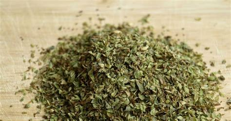

Dizem que esse "orégano" é diferente de qualquer outro, e quem conhece a piada já entende a referência.
Não é o tipo de ingrediente que costuma aparecer em receitas de pizza, mas sim em memes, vídeos e conversas descontraídas pela internet.
O apelido virou uma forma bem-humorada de se referir a outra coisa, fazendo parte da cultura das redes sociais e arrancando risadas de quem reconhece a brincadeira.